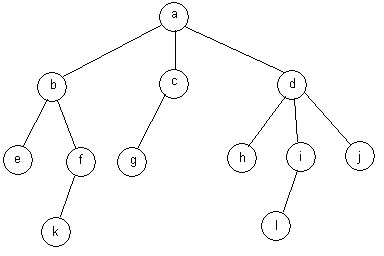

A tree structure is shown below where each node has a reference to its parent, a reference to its first child and a reference to its right sibling.
class Node {
Object item;
Node
parent, firstChild, rightSib;
}
a)Write a method that returns the next node at the same level on the right. If you use any helper methods, you must provide their implemetation as well.The signature of the method is:
b) What is the complexity of your method? Explain how you computed it.
Node GetNextLevelSibling(Node p);
Examples:
GetNextLevelSibling(f) -> g
GetNextLevelSibling(k) -> l
GetNextLevelSibling(h) -> i
GetNextLevelSibling(d) -> null
| 
|
Actual Diagram of Tree for Question #1 showing all references |